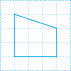
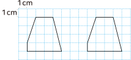
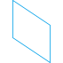
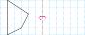

- 1
- 2
- 3
- 4
- 5
- 6
- 7
- 8
- 9
- 10
- 11
- 12
-
1 도형을 오른쪽으로 밀었을 때의 도형을 그려 보세요.
 -
2 모양 조각을 오른쪽으로 뒤집었을 때의 모양에 표 하세요.
-
3 도형을 움직인 방법으로 알맞은 말에 표 하세요.
도형을 시계 방향으로 90˚만큼 돌리면 도형의 위쪽 부분이 ( 왼쪽 , 오른쪽 )으로 움직입니다. -
4 안에 알맞은 것을 써넣으세요.
나 도형을쪽으로왼cm 밀면 가 도형이 됩니다.7 -
5 모양으로 뒤집기를 이용하여 만든 무늬입니다. 빈칸을 채워 무늬를 완성해 보세요.
-
6 도형을 시계 방향으로 90˚만큼 돌렸을 때의 도형을 그려 보세요.
 -
7 모양으로 규칙적인 무늬를 만든 것입니다. 만든 방법을 설명해 보세요.
-
방법모양을 시계 방향으로 90˚만큼씩 돌리는 것을 반복해서 모양을 만들고 그 모양을 오른쪽으로 밀어서 무늬를 만들었습니다.
-
-
8 어떤 도형을 왼쪽으로 뒤집었을 때의 도형입니다. 처음 도형을 그려 보세요.
 -
9 도형을 왼쪽으로 5번 뒤집었을 때의 도형을 그려 보세요.

-
10 어떤 도형을 시계 반대 방향으로 90°만큼 돌려야 할 것을 잘못하여 시계 방향으로 90°만큼 돌렸더니 다음과 같은 도형이 되었습니다. 바르게 움직였을 때의 도형을 그려 보세요.
-
11 어떤 도형을 시계 반대 방향으로 90°만큼 돌려야 할 것을 잘못하여 시계 방향으로 90°만큼 돌렸더니 다음과 같은 도형이 되었습니다. 바르게 움직였을 때의 도형을 그려 보세요.
2개 -
12 숫자 카드를 한 번씩 사용하여 가장 큰 두 자리 수를 만들었습니다. 만든 두 자리 수를 시계 방향으로 180˚만큼 돌렸을 때 만들어진 수와 처음에 만들어진 수의 차를 구해 보세요.
27